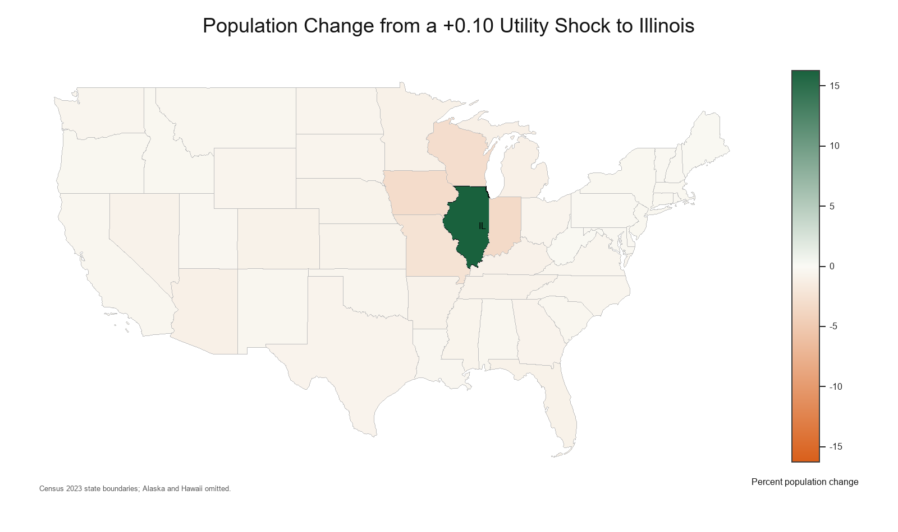

Overview
This minimal example implements the SPACE framework using state-to-state migration flows from the IRS Statistics of Income (SOI). The script reads bilateral flows, constructs the symmetric migration moments, recovers $\tilde{\rho}$ and the transformed weights, and calibrates $\tilde{\nu}$. It then considers the counterfactual of a 10 percent utility increase in Illinois.
The example is meant to be read alongside the note. It is purposefully simple to give guidance to someone who wishes to embed the SPACE framework into a more complicated QSM.
Replication Files
Download the minimal replication folder as a zip file. It includes the MATLAB and Python scripts, the IRS SOI migration-flow input, the preprocessed map CSV, and a short README.
| File | Source | Purpose |
|---|---|---|
| space_state_example.m | MATLAB | Runs the state-flow calibration and counterfactual in MATLAB. |
| space_state_example.py | Python | Runs the same calibration and creates the map shown below. |
| stateinflow1213.csv | IRS Statistics of Income | State-to-state migration flows used as the bilateral migration input. |
| shapefiles/cb_2023_us_state_20m_polygons.csv | U.S. Census Bureau cartographic boundary file, preprocessed to CSV | State polygon coordinates used to draw the map. |
| README.md | Replication notes | Lists the files and gives short run instructions. |
Output
This map plots the population change by state of a 10 percent utility increase in Illinois.

References
Internal Revenue Service, Statistics of Income. SOI Tax Stats - Migration Data. The example uses the 2012 to 2013 state-to-state migration file.
U.S. Census Bureau. Cartographic Boundary Files - Shapefile. The example uses the 2023 U.S. state cartographic boundary file at 20m resolution, preprocessed to CSV.